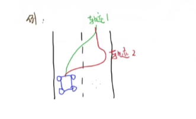
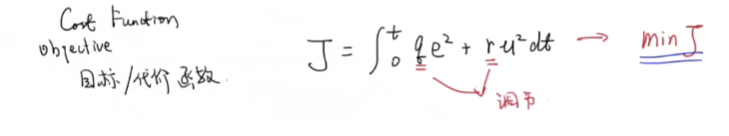
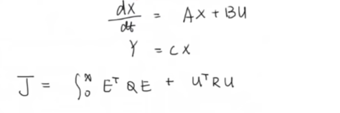
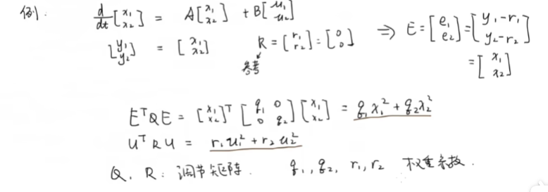
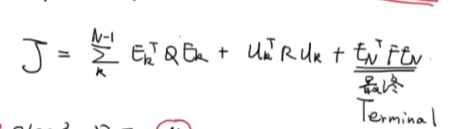
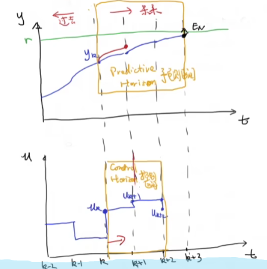
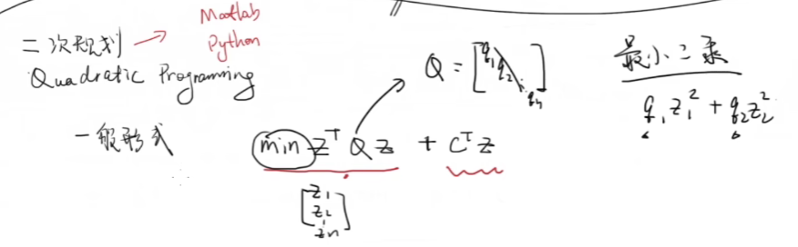
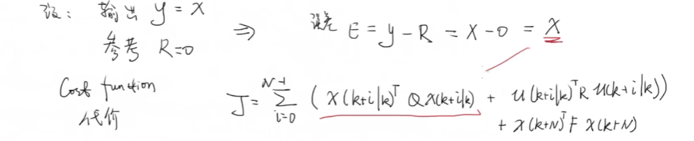

作为准备毕业设计中记录的一个小小的笔记，基本上是DR_CAN视频内容的文字化，加上一点偷的弹幕的理解，学习的视频链接https://www.bilibili.com/video/BV1cL411n7KV/?spm_id_from=333.337.search-card.all.click&vd_source=f2c9b0ff37b57e06f19aca3a7a022d4b
最优控制和基本概念
最优控制的研究动机：在约束条件下达到最优的系统表现。约束条件例如一辆车在转向时轮胎可以转向的最大半径。最优是一个综合的结果，并不是越快越好，例如下面两条轨迹，轨迹1相较轨迹2比较舒适。遇到紧急避障，避免撞上障碍物，轨迹2更好。

类比为单入单出系统（SISO），引入误差函数对$e^2$积分，越小跟踪越好，对输入$u^2$进行积分，越小输入越小，说明能耗是最低的，能够用很小的能耗达到系统的表现，加入平方是为了排除出现正负误差抵消对结果的影响。

代价函数，q，r进行调节，使得J最小。

q>>r，看重误差，r>>q，看重输入。
对于多入多出系统，以这样一个状态空间为例，设出代价函数（二次型指标）

Q,R为调节矩阵，类比于单入单出矩阵q，r都是1的一阶矩阵，这边可以完全可以将Q,R设成对角阵，Q，R对角线上的元素的大小，重视哪个输入的误差or输入。
例如设$Q= \left[
\matrix{
1 & 0\
0 & 0\
}
\right]$ $R= \left[
\matrix{
0 & 0\
0 & 0\
}
\right]$ 表示只关心x1的误差

MPC的基本概念：通过模型来预测在某一未来时间段内的表现来进行优化控制。多用于数位控制，常用离散，状态空间表达：$x(k+1)=Ax(k)+Bu(k)$
分为三步：
在k时刻：
step1.测量/估计当前值。
step2.基于u(k),u(k+1)…..u(k+n)来进行最优化，离散型，积分号变成加和，找到En的最小值

step3.只取u(k)，滚动优化

可能有误的理解下，类比于下棋，下一步棋前要预测很多步，但对面棋下完后又要重新考虑。感觉和贪心类似。
最优化数学建模推导
二次规划
一般形式: $min Z^TQZ+C^TZ$
一般设Q为对角矩阵,$Z=[z1,z2,z3……]^T$,$f(z)=Z^TQZ$为二次型的形式，找到最小

对于一般的离散状态空间 $x(k+1)=Ax(k)+Bu(k)$
在k时刻，出现u(k|k),u(k+1|k)………u(k+i|k),后面的k是就是指的是当前时刻，前面的k,k+1……k+i都是在k时刻预测出来的东西，可以类比于条件概率的形式，虽然扯不上半毛边。然后预测空间N为预测这样的有多少个u，根据实际情况来决定。由于存在u(k|k),u(k+1|k)………u(k+N|k)，就不妨设以下
$X=[x(k|k),x(k+1|k)………x(k+N|k)]^T$
$U=[u(k|k),u(k+1|k)………u(k+N-1|k)]^T$
(对于这里u(k+N-1|k)还是u(k+N|k)，我觉得是u(k+N-1|k)，得出x(k+N|k)只到u(k+N-1|k))

转置相乘对应的就是平方和，$e^2$，$u^2$